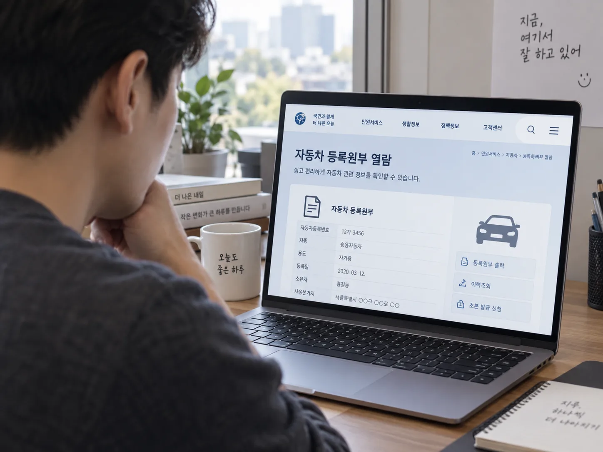
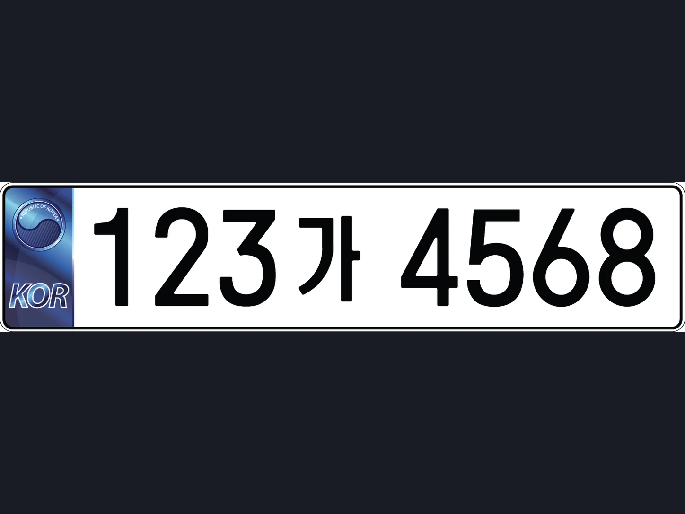

▲ 중고차 계약 전 자동차등록원부를 온라인으로 무료 열람할 수 있다 ⓒ CarPrism (AI 생성 이미지)
계약금부터 보내고 나서 등록원부를 떼보는 사람이 생각보다 많다.
중고차를 사고 나서야 "이 차, 저당이 잡혀 있어서 명의이전이 안 됩니다"라는 말을 듣는 경우가 있다. 카히스토리에서 사고 이력과 침수 이력까지 꼼꼼히 확인했는데도 이런 일이 생기는 이유는 간단하다. 압류·저당 여부는 카히스토리가 아니라 자동차등록원부에서 확인해야 하는 정보이기 때문이다.
1. 압류·저당이란 무엇이고, 왜 명의이전을 막는가
압류와 저당은 둘 다 '이 차에 걸려 있는 빚'을 뜻하지만 생기는 이유가 다르다.
| 구분 | 발생 원인 | 등록원부 표기 위치 |
|---|---|---|
| 압류 | 세금 체납, 법원 판결 등으로 국가·채권자가 강제로 재산권을 묶어둔 상태. 과태료·자동차세 체납이 대표적 | 등록원부 갑구 |
| 저당(근저당) | 차량을 담보로 대출(캐피탈·할부금융 등)을 받은 상태. 할부가 안 끝난 차에 흔함 | 등록원부 을구 |
중고차 매매의 핵심 원칙은 단순하다. 압류나 저당이 단 한 건이라도 말소되지 않은 채 남아 있으면, 관할 관청은 이전등록(명의이전) 자체를 접수해주지 않는다. 즉 계약서에 서명하고 돈을 다 치렀더라도, 판매자가 저당을 해지하지 않으면 내 명의로 차를 등록할 방법이 없다.
📍 판매자가 저당을 몰랐던 경우도 있다
차량 구입 시 할부금융사를 통해 저당을 설정해놓고 완납 후 말소 신청을 깜빡한 채 되파는 경우도 드물지 않다. 판매자에게 악의가 없더라도, 매수인 입장에서는 등록원부를 직접 확인하지 않으면 똑같이 발이 묶인다.
2. 자동차등록원부 발급법 — 정부24·자동차365에서 무료로
자동차등록원부는 차량의 '등기부등본'이라고 보면 된다. 갑구에는 소유자 변경·압류 이력이, 을구에는 저당권 설정·변경·말소 이력이 기재된다.

▲ 정부24·자동차365 모두 본인 인증 후 이 등록번호만 입력하면 원부를 열람할 수 있다 ⓒ 대한민국 정부(문화체육관광부) · Wikimedia Commons (Public Domain)
| 경로 | 수수료 | 비고 |
|---|---|---|
| 정부24 / 자동차365 인터넷 발급·열람 | 무료(0원) | 본인 명의 차량은 간편인증으로 바로 열람. 처리기간은 통상 즉시~당일 |
| 구청·주민센터 방문 발급 | 등본 300원 · 초본 100원 | 신분증 지참 필수 |
| 무인민원발급기 / 우편 | 등본 300원 · 초본 100원 | 방문이 번거로울 때 대안 |
✅ 매수인도 조회할 수 있다
· 자동차등록원부 갑구는 차량번호와 소유자 성명만 알면 제3자도 소유자 동의 없이 발급·열람이 가능하다
· 계약 전이라면 판매자에게 등록원부(갑구·을구) 사본을 요청하거나, 차량번호를 받아 직접 자동차365에서 압류·저당 여부만 무료 조회할 수도 있다
· 등록원부 하단의 '저당권자' 항목이 비어 있으면 저당 없음, 압류 항목에 기관명이 기재돼 있으면 압류 상태라는 뜻이다
차량번호만으로 압류·저당 여부를 간편 조회하려면 자동차민원 대국민포털을 이용할 수 있다. 자동차365 바로가기
3. 카히스토리로는 무엇을 볼 수 있고, 무엇을 못 보나
카히스토리(보험개발원)는 자동차등록원부와는 완전히 다른 데이터베이스다. 보험사에 접수된 사고·수리 기록을 기반으로 하기 때문에, 등기 정보인 압류·저당은 애초에 조회 항목에 없다.
| 구분 | 카히스토리 | 자동차등록원부 |
|---|---|---|
| 운영 주체 | 보험개발원 | 국토교통부·시군구(자동차365) |
| 확인 가능 | 보험 처리된 사고이력·수리비, 침수 이력, 소유자 변경 횟수, 용도변경(관용·영업용 등) 이력 | 압류·저당(근저당) 설정 여부, 소유권 변동 이력, 자동차세 체납 압류 |
| 확인 불가 | 압류·저당, 자비 수리·소액 사고(보험 미처리 건) | 실제 사고·침수 이력 |
| 비용 | 기본 조회 무료(상세 항목 일부 유료) | 인터넷 무료 |
📍 "카히스토리 확인했으니 안전하다"는 착각
카히스토리로 사고·침수 이력이 깨끗하게 나왔다고 해서 압류·저당이 없다는 뜻은 아니다. 두 서비스는 확인 범위가 겹치지 않으므로, 중고차를 살 때는 반드시 두 가지를 모두 확인해야 한다 — 카히스토리로 사고·침수, 등록원부로 압류·저당.
4. 압류·저당 차량을 그대로 매매하면 벌어지는 일
가장 흔한 피해 패턴은 이렇다. 매수인이 계약금과 잔금을 모두 지급했는데, 판매자(또는 매매상사)가 저당·압류를 해지하지 않아 이전등록이 계속 미뤄지는 경우다. 이 경우 매수인은 다음과 같은 이중 부담을 떠안을 수 있다.
▲ 등록원부 을구에 저당권자, 갑구에 압류 기관명이 남아 있으면 명의이전이 막힌다 ⓒ CarPrism (AI 생성 이미지)
⚠️ 압류·저당 차량 거래 시 발생할 수 있는 문제
· 명의이전 자체가 불가 — 돈은 지급했지만 등록증상 소유자는 여전히 매도인
· 매도인 명의로 남아 있는 동안 과태료·자동차세·사고 책임이 형식상 매도인에게 계속 부과될 수 있어 분쟁으로 이어짐
· 저당권자(캐피탈사 등)가 채권 회수를 위해 차량을 강제로 회수(견인)할 가능성도 배제할 수 없음
· 압류·저당 사실을 거짓으로 고지하거나 알리지 않은 경우, 매수인은 일정 기간 내 계약을 해제할 수 있지만, 그 사이 보험료·이용 손실 등 실질적 손해는 매수인이 떠안는 구조
법적으로 이전등록은 매매 계약일로부터 15일 이내에 마쳐야 하며, 기한을 넘기면 매수인에게 과태료가 부과된다. 지연 10일 이내는 10만 원, 이후 하루 지날 때마다 1만 원씩 늘어나 최대 50만 원까지 부과될 수 있다. 저당·압류가 걸려 있는 차는 이 기한을 지키는 것 자체가 불가능해진다는 점에서 문제가 더 커진다.
5. 명의이전 당일 확인해야 할 서류 체크리스트
등록원부에서 압류·저당이 없는 것을 확인했다면, 다음은 실제 명의이전 준비다. 개인 간 직거래를 기준으로 정리하면 다음과 같다.
▲ 계약서 작성 시점에 압류·저당 여부를 매도인이 서면으로 고지하도록 확인해두는 것이 안전하다 ⓒ CarPrism (AI 생성 이미지)
| 서류 | 준비 주체 | 비고 |
|---|---|---|
| 자동차 등록증(원본) | 매도인 | 차대번호·소유자 등 기본 정보 확인 |
| 매도용 인감증명서 (또는 본인서명사실확인서) | 매도인 | 매수인의 성명·주민등록번호·주소가 기재된 것. 매도인이 이전등록 현장에 동행하면 생략 가능 |
| 자동차 양도증명서 | 매도인·매수인 공동 작성 | 개인 간 직거래 시 별지 서식 사용 |
| 이전등록 신청서 | 매수인 | 관할 시군구 차량등록사업소 또는 정부24·자동차365 온라인 신청 |
| 신분증 | 매도인·매수인 | 본인 확인용 |
| 책임보험 가입 증명 | 매수인 | 이전등록 전 신규 보험 가입 필요 |
✅ 서류를 받기 전, 이 순서를 지킬 것
· 계약서 작성 전: 등록원부(갑구·을구)로 압류·저당 여부 확인
· 잔금 지급 전: 저당이 있었다면 말소 확인서(또는 완납·해지 증빙)를 받고, 등록원부를 다시 한번 재확인
· 잔금 지급과 동시: 등록증 원본, 매도용 인감증명서(또는 동행), 양도증명서 수령
· 이후 15일 이내: 관할 관청 또는 온라인으로 이전등록 완료
이전등록 신청서 양식과 온라인 접수는 정부24에서 확인할 수 있다. 정부24 이전등록 신청 바로가기
6. 정리 — 계약 전 5분이면 끝나는 확인
압류·저당 조회는 어렵지 않다. 정부24나 자동차365에서 차량번호 하나로 무료로 확인할 수 있고, 소요 시간도 5분 안팎이다. 문제는 이 절차를 아예 모르거나, 카히스토리 조회만으로 충분하다고 착각하는 경우다.
중고차 매매 시 확인해야 할 것은 두 갈래로 나뉜다. 사고·침수·주행거리는 카히스토리와 실물 점검으로, 압류·저당·소유권 관계는 자동차등록원부로 확인해야 한다. 어느 한쪽만 확인하고 계약서에 서명하면, 나머지 한쪽에서 문제가 생겼을 때 손해를 되돌리기 어렵다.
7. 요약
중고차 압류·저당 여부는 카히스토리가 아니라 자동차등록원부(갑구·을구)에서 확인해야 한다. 정부24·자동차365에서 인터넷으로 열람·발급하면 수수료는 무료다.
압류·저당이 단 한 건이라도 남아 있으면 명의이전(이전등록) 자체가 불가능하다. 계약서 작성 전 등록원부를 확인하고, 잔금을 치르기 전에 저당 말소 여부를 한 번 더 확인하는 것이 안전하다.
명의이전 당일에는 등록증 원본, 매도용 인감증명서(또는 매도인 동행), 양도증명서, 이전등록 신청서, 신분증, 책임보험 가입 증명을 챙겨야 한다. 계약일로부터 15일 이내에 이전등록을 마치지 않으면 매수인에게 과태료가 부과될 수 있다.